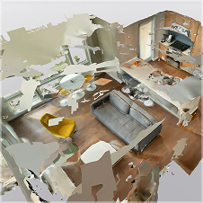
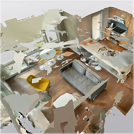
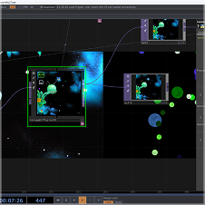
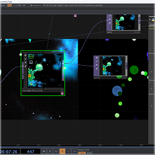

все
тутор
воркшоп
интервью
12 марта 2025
Юля Курочка — AI-художник, промпт-инженер и куратор образовательной программы CMP (Check My Prompt), где помогает другим освоить тонкости работы с генеративным искусством.
Читать дальше
24 февраля 2022
Готовые инструменты вроде Midjourney и Stable Diffusion — лишь первый шаг в мире генеративного ИИ. Настоящая свобода начинается, когда ты обучаешь нейросеть на своих изображениях, создавая по-настоящему уникальные визуальные решения. В статье мы покажем, как с помощью Replicate любой дизайнер может превратить ИИ в своего персонального творческого соавтора
 
26 декабря 2024
Айдентика для образовательного медиа для криэйторов со своим комьюнити, которое проявляется в конкретных событиях poor performance

20 марта 2025
Готовые инструменты вроде Midjourney и Stable Diffusion — лишь первый шаг в мире генеративного ИИ. Настоящая свобода начинается, когда ты обучаешь нейросеть на своих изображениях, создавая по-настоящему уникальные визуальные решения. В статье мы покажем, как с помощью Replicate любой дизайнер может превратить ИИ в своего персонального творческого соавтора
12 марта 2025
Айдентика для образовательного медиа для криэйторов со своим комьюнити, которое проявляется в конкретных событиях poor performance
 
20 марта 2025
Готовые инструменты вроде Midjourney и Stable Diffusion — лишь первый шаг в мире генеративного ИИ. Настоящая свобода начинается, когда ты обучаешь нейросеть на своих изображениях, создавая по-настоящему уникальные визуальные решения. В статье мы покажем, как с помощью Replicate любой дизайнер может превратить ИИ в своего персонального творческого соавтора
12 марта 2025
Айдентика для образовательного медиа для криэйторов со своим комьюнити, которое проявляется в конкретных событиях poor performance
23 сентября 2024
В сентябре мы поговорили с Артемом Милитоняном — дизайнером-новатором, основателем социального Web3-приложения ORB и постоянным победителем международных дизайн-конкурсов
Читать дальше
тебе чего то не хватило? пиши в тг

@hello_poorperformance
ответит маша, мб андрей, ваня не умеет